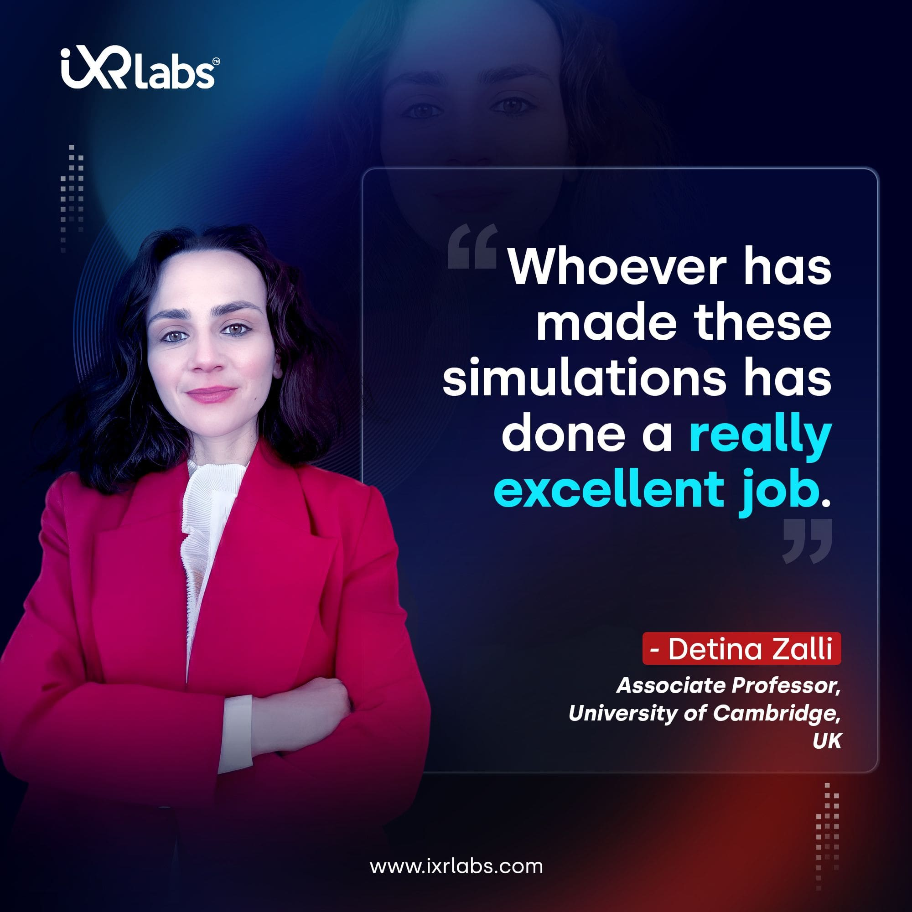

.png)
The process of learning has evolved into a basic need for humans. It is through the process of teaching and learning of basic skills that humanity has evolved into what it is today. Learning first began through hearing. With the evolution of language, people began to read, write, and learn.
Then, skipping forward, a proper system of education was created in the form of classes and schools. Novel disciplines are invited for novel content and hence, novel teaching methods.
Teachers began lecturing by incorporating more visuals like diagrams and videos, and finally, all of this was transferred into an online platform to be able to be a medium that reached every medium.
From this, it is evident that humans will always try to evolve the system of education based on the latest technology. This is because learning will always be carried out even decades from now.
With virtual reality being the latest technology, its combination with the process of learning is inevitable. But what are the benefits of VR labs in education?
Does VR in science education allow for improved education for the next generation?
1. You Do Not Just Hear and See… You DO in VR!
The beauty of VR for higher education and VR in science education is that there is no longer a dependency on books and reading for hours on end. Let us be honest, even watching how-to videos has taken its toll. But more than that, using VR for education means being able to do something.
If you are interested in what Mars looks like, you do not need to look through Google Images or YouTube videos of satellite images. You do not even need to wait to become an astronaut or buy a telescope and schedule the exact time when you can see it most clearly.
You simply need to strap on a pair of VR headsets, and you will find yourself on Mars! You will be able to walk on the planet from your room!

2. Immersive Learning at Virtual Science Labs
Immersive learning is only available with VR technology. Hence, VR-based applications of iXR Labs have managed to create a simulated version of laboratories. In our VR lab, students can work and learn how to work with actual laboratory resources by doing it themselves virtually.
Our virtual reality lab gives access to physics, chemistry, and biology laboratories and has begun to be used in many higher education facilities.
We see through this that the primary benefits of VR in higher education, especially through these laboratories its easy usability, remote access, and also provision of a safe environment without compromising on learning.
3. Science Education can get…Boring!
Studying science relentlessly means being able to keep up with millions of theories and concepts and knowing the history of how these theories and concepts came to be. This kind of content can lead students to become easily bored and disinterested.
Explore all Science Modules
VR in higher education is not only a method to enhance education but also an innovative teaching apparatus that students need in order to be amazed by scientific theories and concepts instead of being bored by them!
4. Making Complex Concepts Easier to Understand
As aforementioned, science holds myriads of theories and concepts within it. However most of these theories and concepts are very abstract in nature, making it difficult for a student to understand them by simply reading a text, listening to a lecture, or even seeing a 2D diagram.
 Get the App from Meta Store: Download Now
Get the App from Meta Store: Download Now
The theories and concepts, with the help of VR technology, come alive, and students can interact with them instead of simply having to commit them to memory. K-Lab for science grads is a VR-based program offered by iXR Labs that primarily helps medical students.
K-Lab for science grads allows students to work with the human body by wearing a set of VR headsets.
5. Enhanced Soft Skills
Contrary to popular belief, VR is not a platform that makes people less social. The uses of VR can be manipulated to make it a platform for shy people to open up and work cooperatively in groups with other people under an avatar.
Our VR-based web application allows students to enhance soft skills like communication and improve on being able to give interviews, which is an integral part of professionalism for students pursuing science.
Hence, questioning whether or not VR will be involved in science education is a redundant one, because the answer is inevitable: yes.
The real question is, will it transform science education, and will it do it for the better and for the advancement of science?
We think that positive is the only direction that VR can take with its merger with science education!
The Final Words
Virtual Reality isn’t just a shiny new tech—it’s a game-changer for science education. By bringing abstract concepts to life, making labs safer and more accessible, and boosting student engagement like never before, VR is reshaping how we teach and learn science. As the technology becomes more affordable and widespread, classrooms will no longer be limited by physical boundaries or outdated teaching tools.
Instead, they’ll become immersive environments where curiosity thrives, understanding deepens, and future scientists take their first steps in virtual worlds that feel incredibly real.
Now is the time for educators, institutions, and policymakers to embrace the shift and set up a VR lab. Because the future of science education isn’t just near—it’s already here, and it’s wearing a headset.